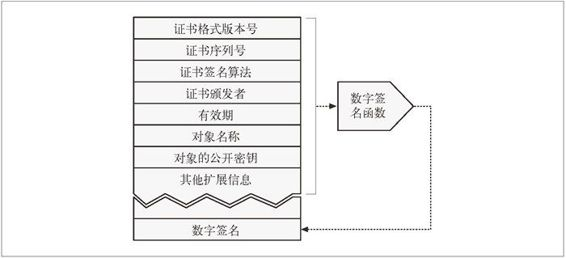
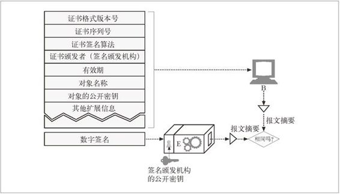

14.6 数字证书
本节将介绍因特网上的“ID 卡”——数字证书。数字证书（通常被称作“certs”，有点像 certs 牌薄荷糖）中包含了由某个受信任组织担保的用户或公司的相关信息。
我们每个人都有很多形式的身份证明。有些 ID，比如护照和驾照，都足以在很多场合证明某人的身份。例如，你可以用美国的驾照在新年前夜搭乘前往纽约的航班，在你到那儿之后，接着用它来证明你的年龄，这样你就能和朋友们一起喝酒了。
受信程度更高的身份证明，比如护照，是由政府在特殊的纸上签发并盖章的。很难伪造，因此可以承载较高的信任度。有些公司的徽章和智能卡中包含有电子信息，以强化使用者的身份证明。有些绝密的政府组织甚至会对你的指纹或视网膜毛细血管模式进行匹配以便确认你的 ID ！
有些形式的 ID，比如名片，相对来说更容易伪造，因此人们不太信任这些信息。虽然足以应付职场交流，但申请住房贷款时，可能就不足以证明你的就业情况了。
14.6.1 证书的主要内容
数字证书中还包含一组信息，所有这些信息都是由一个官方的“证书颁发机构”以数字方式签发的。基本的数字证书中通常包含一些纸质 ID 中常见的内容，比如：
对象的名称（人、服务器、组织等）；
过期时间；
证书发布者（由谁为证书担保）；
来自证书发布者的数字签名。
而且，数字证书通常还包括对象的公开密钥，以及对象和所用签名算法的描述性信息。任何人都可以创建一个数字证书，但并不是所有人都能够获得受人尊敬的签发权，从而为证书信息担保，并用其私有密钥签发证书。典型的证书结构如图 14-11 所示。

图 14-11 典型的数字签名格式
14.6.2 X.509 v3证书
不幸的是，数字证书没有单一的全球标准。就像不是所有印刷版 ID 卡都在同样的位置包含了同样的信息一样，数字证书也有很多略有不同的形式。 不过好消息就是现在使用的大多数证书都以一种标准格式——X.509 v3，来存储它们的信息。X.509 v3 证书提供了一种标准的方式，将证书信息规范至一些可解析字段中。不同类型的证书有不同的字段值，但大部分都遵循 X.509 v3 结构。表 14-2 介绍了 X.509 证书中的字段信息。
表14-2 X.509证书字段
| 字 段 | 描 述 |
|---|---|
| 版本 | 这个证书的 X.509 证书版本号。现在使用的通常都是版本3 |
| 序列号 | 证书颁发机构（CA）生成的唯一整数。CA 生成的每个证书都要有一个唯一的序列号 |
| 签名算法 ID | 签名所使用的加密算法。例如，“用 RSA 加密的 MD2 摘要” |
| 证书颁发者 | 发布并签署这个证书的组织名称，以 X.500 格式表示 |
| 有效期 | 此证书何时有效，由一个起始日期和一个结束日期来表示 |
| 对象名称 | 证书中描述的实体，比如一个人或一个组织。对象名称是以 X.500 格式表示的 |
| 对象的公开密钥信息 | 证书对象的公开密钥，公开密钥使用的算法，以及所有附加参数 |
| 发布者唯一的ID（可选） | 可选的证书发布者唯一标识符，这样就可以重用相同的发布者名称 |
| 对象唯一的ID（可选） | 可选的证书对象唯一标识符，这样就可以重用相同的对象名称了 |
| 扩展 | 可选的扩展字段集（在版本 3 及更高的版本中使用）。每个扩展字段都被标识为关键或非关键的。关键扩展非常重要，证书使用者一定要能够理解。如果证书使用者无法识别出关键扩展字段，就必须拒绝这个证书。 目前在使用的常用扩展字段包括： 基本约束 对象与证书颁发机构的关系 证书策略 授予证书的策略 密钥的使用 对公开密钥使用的限制 |
| 证书的颁发机构签名 | 证书颁发机构用指定的签名算法对上述所有字段进行的数字签名 |
基于 X.509 证书的签名有好几种，（其中）包括 Web 服务器证书、客户端电子邮件证书、软件代码签名证书和证书颁发机构证书。
14.6.3 用证书对服务器进行认证
通过 HTTPS 建立了一个安全 Web 事务之后，现代的浏览器都会自动获取所连接服务器的数字证书。如果服务器没有证书，安全连接就会失败。服务器证书中包含很多字段，其中包括：
Web 站点的名称和主机名；
Web 站点的公开密钥；
签名颁发机构的名称；
来自签名颁发机构的签名。
浏览器收到证书时会对签名颁发机构进行检查。1 如果这个机构是个很有权威的公共签名机构，浏览器可能已经知道其公开密钥了（浏览器会预先安装很多签名颁发机构的证书）。这样，就可以像前面的 14.5 节中所讨论的那样验证签名了。图 14-12 说明了如何通过其数字签名来验证证书的完整性。
1 浏览器和其他因特网应用程序都会尽量隐藏大部分证书管理的细节，使得浏览更加方便。但通过安全连接进行浏览时，所有主要的浏览器都允许你自己去检查所要对话站点的证书，以确保所有内容都是诚实可信的。
如果对签名颁发机构一无所知，浏览器就无法确定是否应该信任这个签名颁发机构，它通常会向用户显示一个对话框，看看他是否相信这个签名发布者。签名发布者可能是本地的 IT 部门或软件厂商。

图 14-12 验证签名是真的